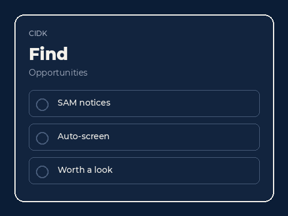
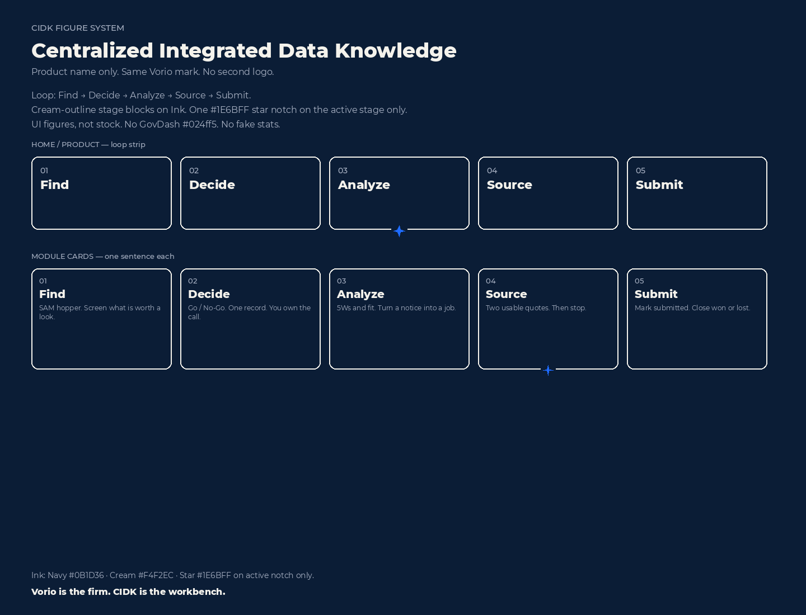
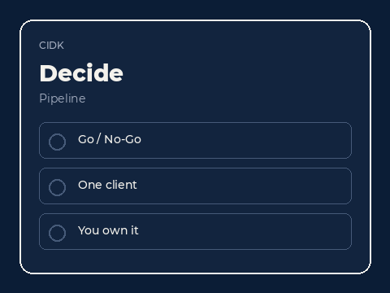
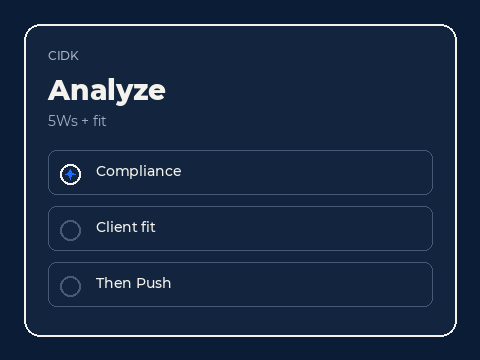
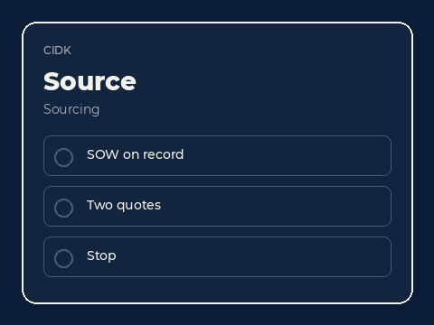
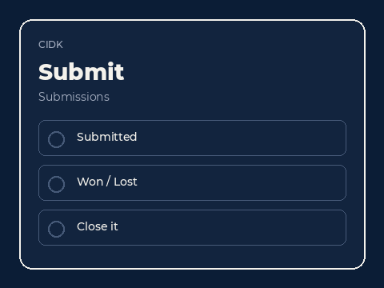

Find
See the work before you spend a team.
- Pipeline The notices that might fit, in one view.
- Read Agency, vehicle, and due date before anyone writes.
- Cut Kill the noise before it becomes a chase.
Vorio Advisory
Centralized Integrated Data Knowledge.
The capture and subcontracting workbench. Find the work, decide, analyze, source the team, and submit. Vorio stays on the desk until it closes.
The loop
Then it closes. One desk for capture and subcontracting.

Five modules
Short work. People still on the desk.

See the work before you spend a team.

Choose the chase, or walk away from it.

Read the work before you write it.

Fill the team you do not already have.

Send it. Then stay for the decision.
With services
Commercial BD and GovCon BD, in one firm. CIDK where the pursuit needs a workbench. People stay until it closes.